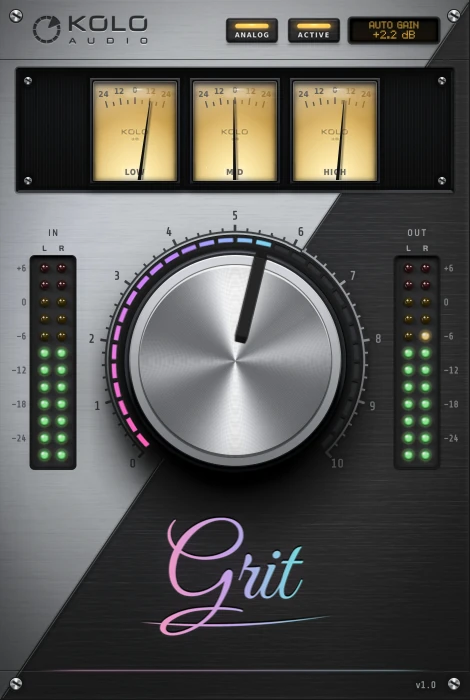

KOLO GRIT: Dynamik mit einem Regler.
Die Light-Version der DYNAMICS-Sektion aus KOLORIT
Kostenlos ab 15. Dezember.
Mails nur zum Launch und wenn AAX fertig ist. Abmelden jederzeit möglich. Datenschutz
KOSTENLOS LADENKostenlos. VST3 für macOS und Windows, AU für macOS. AAX folgt bald.
Depth
Dreh DEPTH auf, und leise Details kommen hoch, während sich die Peaks beruhigen, in LOW, MID und HIGH zugleich.
Grit
Ein Klick auf den Grit-Schriftzug bringt schnellere, härtere Dynamik, die Tails und Raum nach vorn holt.
Auto Gain
Hält den Ausgang so laut wie den Eingang. Ab Werk an.
Analog
Gibt LOW und MID einen Hauch Hardware-Farbe.
Meter
VU-Meter für LOW, MID und HIGH, Peak-Meter an Input und Output.
Jede Größe
Fenster von 75 bis 200 % skalierbar.
Lust auf die Vollversion?
KOLO GRIT ist die Light-Version der DYNAMICS-Sektion aus KOLORIT. KOLORIT bringt dazu Sättigung, Noise und Tilt und gibt dir für die Dynamik UP, DOWN, TIME und MIX.
KOLORIT entdeckenSystemanforderungen
macOS
macOS 11 oder neuer, Apple Silicon und Intel
VST3 und AU
Windows
Windows 10 und 11, 64 Bit
VST3
Kostenlos. AAX folgt bald. Benötigt eine DAW.